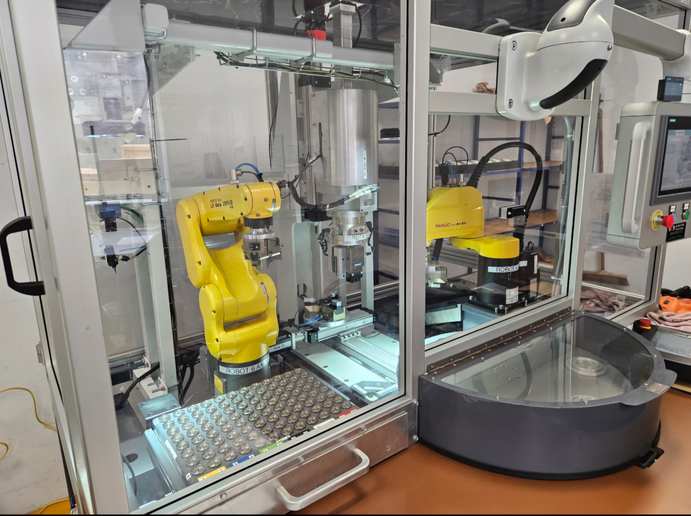

Martin Roth
Robotics engineer, graduated from Polytech Dijon in 2026.
Ingénieur Robotique, diplômé de Polytech Dijon en 2026.
Professional experienceExpérience professionnelle
ProjectsProjets
Contact
Robotics Internship - Alstom - Le Creusot, France
Worked on the improvement and optimisation of a robotic railway shock absorber assembly machine using FANUC industrial robots.
- Optimised the robotic gluing process by developing a multi-deposit glue system adapted to part diameter, improving assembly quality and reducing defects caused by glue overfilling or underfilling
- Optimised robotic assembly and screwing operations through trajectory modifications and virtual compliance programming to compensate for component positioning inaccuracies
- Reduced machine cycle time by 15%
Stage Roboticien - Alstom - Le Creusot, France
Participation à l’amélioration et à l’optimisation d’une machine robotisée d’assemblage d’amortisseurs ferroviaires utilisant des robots industriels FANUC.
- Optimisation du processus robotisé d’encollage : développement d’un système de déposes multiples de colle adaptées au diamètre des pièces afin d’améliorer la qualité d’assemblage et de réduire les défauts liés au surdosage ou au sous-dosage
- Optimisation des opérations robotisées d’assemblage et de vissage grâce à des modifications de trajectoires et à la programmation de compliance virtuelle pour compenser les imprécisions de positionnement des composants mécaniques
- Réduction du temps de cycle de 15%
